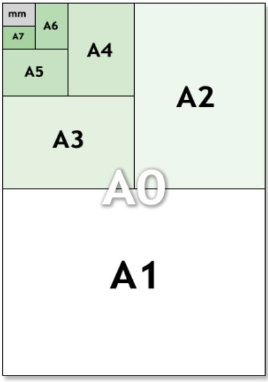
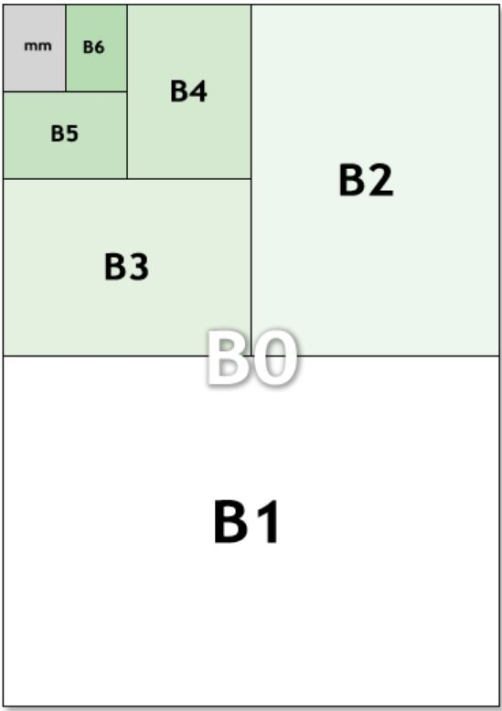

(All done in inches)
There are four types of business cards listed being the business card of 3.2in by 2in from North America, the Japanese business car of 3.3583in by 2.165in from Japan, the Hungarian business car of 3.543in by 1.969 in, and lastly the international business card of 3.37in by 2.125in
The A and B sizes of paper are international standards and are used almost everywhere but America and its influences. The A and B sizes work of the paper before them in a sort of spiral.
 ANSI and ARCH are both paper sizes used in America and its influences are slightly wider and shorter than their A and B counterparts.
The Letter, Government Letter, and Half Letter are loosely based each other but also not really, the Legal, Jr. Legal, and Government Legal are in the same boat with Jr. and half being the smallest following regular sized and then government. With the Executive being on its own little sailboat with nothing going for why it is needed. Ledger/Tabloid/ANSI B just wanted to be a little different with three names.
(The more red a country is the more American sized paper it uses when the more blue a country is the more International sized paper it uses)